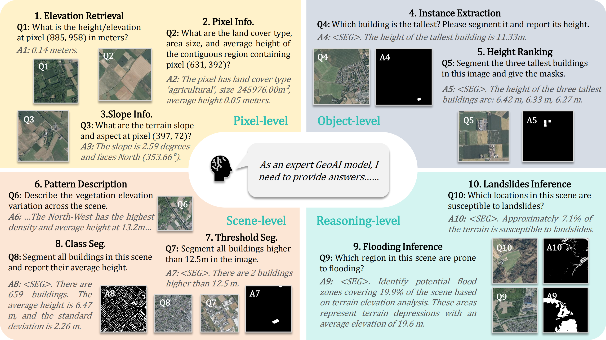
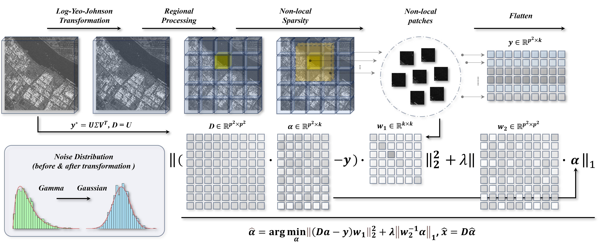
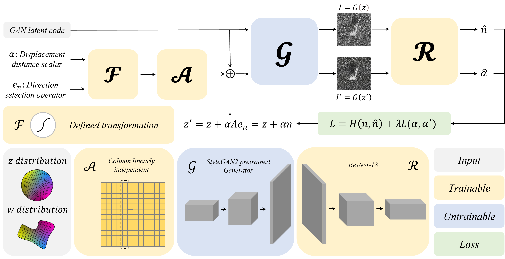
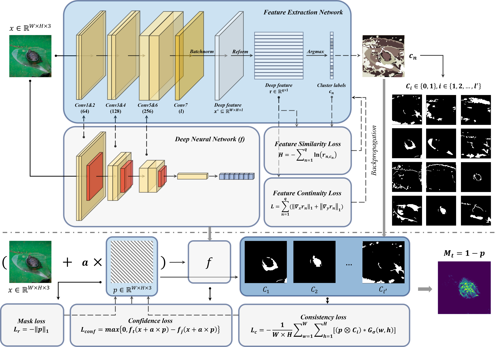
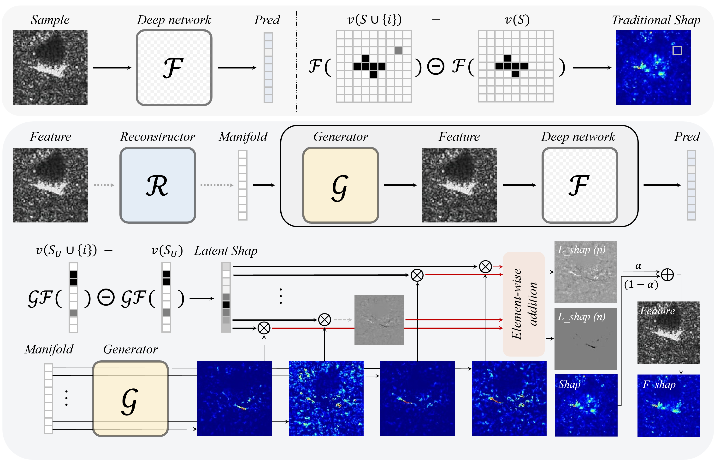
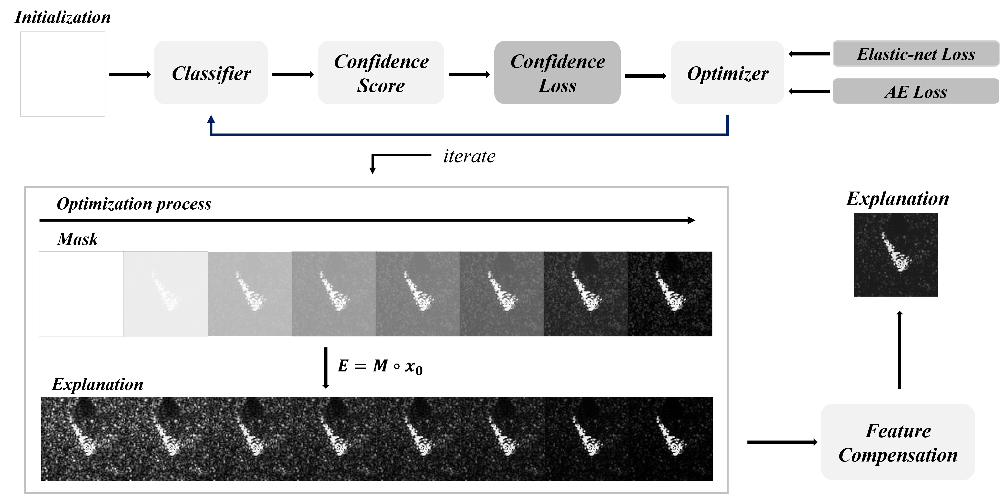
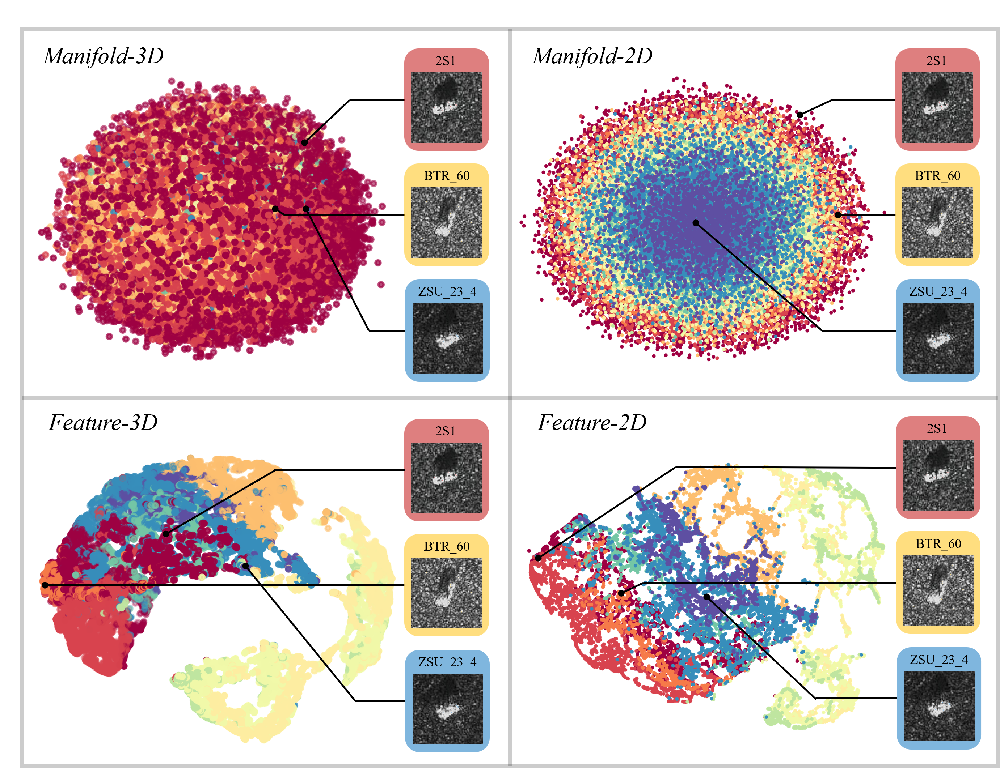
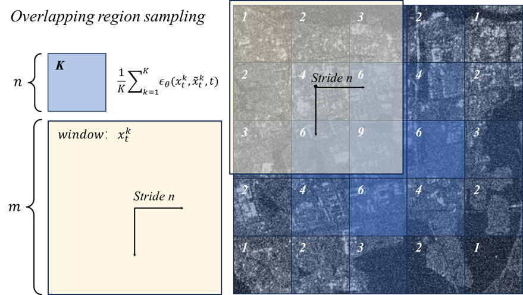

GeoAI · Explainable AI · Remote Sensing
Xuran Hu
PhD Candidate at KTH Royal Institute of Technology
Hi! I am a first-year PhD student in the Division of Geoinformatics at KTH Royal Institute of Technology, supervised by Prof. Yifang Ban and Prof. Andrea Nascetti. My research focuses on explainable artificial intelligence and its applications in remote sensing, especially interpretable deep learning and image understanding.
I am also a research assistant at the HKUST(GZ) AI4City Lab with Prof. Wufan Zhao. I received my master's and bachelor's degrees from Xidian University, where my master's research was supervised by Prof. Mingzhe Zhu. From May 2024 to February 2025, I visited the Time-Frequency Signal Analysis group at the University of Montenegro under the supervision of Prof. Ljubiša Stanković.
Stockholm, Sweden
Updates
News
- γ-Bridge paper & code available.
- GeoHeight-Bench paper & project page available.
- Started my PhD journey at KTH.
- One paper accepted by IEEE Signal Processing Letters.
- Joined the HKUST(GZ) AI4City Lab as a research assistant.
- One paper accepted by Knowledge-Based Systems.
- Received my master's degree from Xidian University.
- Presented at TELFOR 2024 in Belgrade.
- One paper accepted by IEEE JSTARS.
- One paper accepted by Neural Networks.
- One paper accepted by Neurocomputing.
- Joined the University of Montenegro TFSA group as a visiting researcher.
- Two papers accepted at IGARSS 2024.
Selected work
Publications


Lightweight Attention-Enhanced Multi-scale Detector for Robust Small Object Detection in UAV
Haitao Yang, Yingzhuo Xiong, Dongliang Zhang, Xiai Yan*, Xuran Hu*
A lightweight attention-enhanced detector for robust small-object localization in UAV imagery.

Causal Attribution of Above-ground Biomass Dynamics in Sweden via SHAP
Xuran Hu
A SHAP-based attribution study of the environmental drivers behind above-ground biomass dynamics across Sweden.
In preparation for Remote Sensing of Environment

SAR Despeckling via Log-Yeo-Johnson Transformation and Sparse Representation
Xuran Hu, Mingzhe Zhu*, Djordje Stankovic, Zhenpeng Feng, Ljubiša Stanković
A transformation-and-sparse-representation framework for suppressing multiplicative speckle while preserving SAR structure.

Interpretable Multi-task SAR Image Processing via GAN-based Unsupervised Manipulation
Xuran Hu, Mingzhe Zhu*, Ziqiang Xu, Zhenpeng Feng, Ljubiša Stanković
An unsupervised GAN framework that learns interpretable manipulations for multiple SAR image-processing tasks.


Re-perceive Global Vision of Transformer for RSI Weakly Supervised Object Localization
Xuran Hu, Mingzhe Zhu*, Zhenpeng Feng, Ljubiša Stanković
A Transformer-based approach that reuses global context to improve weakly supervised localization in remote sensing images.


Unveiling SAR Target Recognition Networks: Adaptive Perturbation Interpretation
Mingzhe Zhu, Xuran Hu*, Zhenpeng Feng, Ljubiša Stanković
An adaptive perturbation framework for revealing how SAR target-recognition networks form their decisions.

Manifold-based Shapley for SAR Recognition Network Explanation
Xuran Hu, Mingzhe Zhu*, Yuanjing Liu, Zhenpeng Feng, Ljubiša Stanković
A manifold-based Shapley formulation for more faithful explanations of SAR recognition networks.

Recognition
Awards
China National Scholarship
National recognition
Huiding Scholarship
Special Prize · Social Scholarship
Xidian University Academic Scholarship
Special Prize